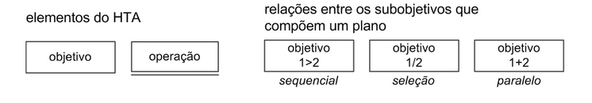
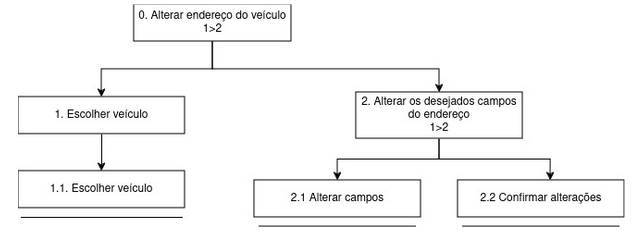
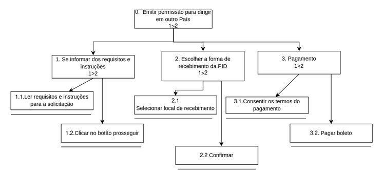
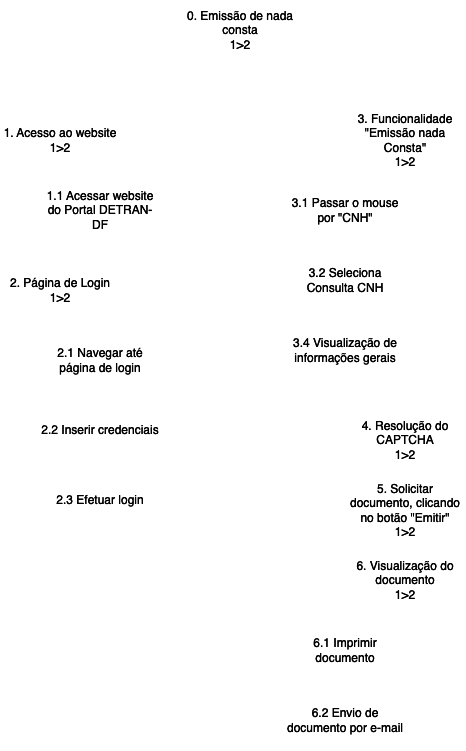
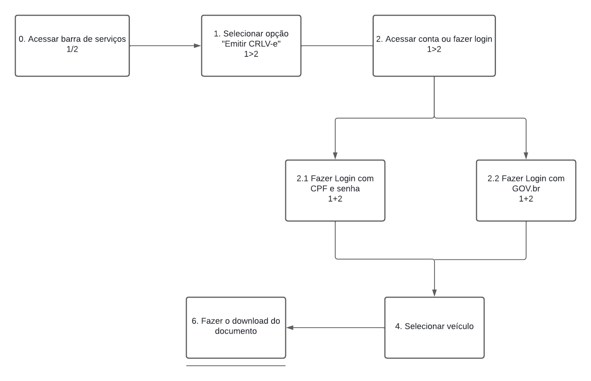
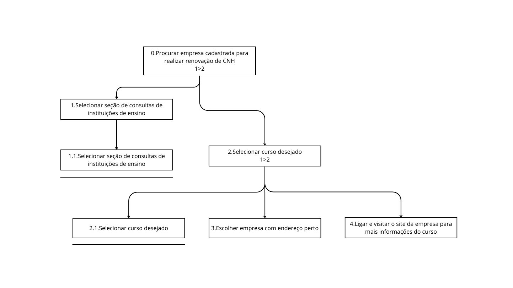

Análise Hierárquica de Tarefas
Introdução Análise Hierárquica de tarefas
A Análise Hierárquica de Tarefas (AHT) é uma ferramenta valiosa para descrever, organizar e compreender as atividades dos usuários em um sistema, ajudando os designers a desenvolver soluções que atendam melhor às necessidades e expectativas dos usuários.
Ela se baseia na hierarquia de atividades e é organizada em objetivos, subobjetivos e operações. Um plano determina a ordem em que essas atividades serão executadas.
Um diagrama da análise de tarefas segue uma padronização gráfica própria, mostrada na figura 1.

Fonte: Interação Humano Computador - BARBOSA, Simone; DINIZ, Bruno. 2010
Alterar endereço do veículo
Tarefa em que o usuário precisa realizar a alteração do endereço em que seu veículo está cadastrado.

Fonte: Interação Humano Computador - BARBOSA, Simone; DINIZ, Bruno. 2010
| Objetivos / Operações | Descrição |
|---|---|
| 0. Alterar endereço do veículo | - Input: Dados do endereço alterados - Feedback: Usuário visualiza prompt de mensagem de sucesso da operação - Plano: Alterar dados pré-existentes e depois confirmar alterações - Recomendação: Permitir que o usuário efetue a alteração de endereço online |
| 1. Escolher veículo | - Plano: Escolher de qual veículo deseja alterar o endereço |
| 1.1 Escolher veículo | |
| 2. Alterar os desejados campos do endereço | - Plano: Alterar um ou mais dos seguintes campos: CEP, logradouro, número, complemento, município, UF, bairro |
| 2.1 Alterar campos | |
| 2.2 Confirmar alterações |
Solicitar Permissão Internacional para Dirigir (PID)
Tarefa em que o usuário solicita uma Permissão Internacional para Dirigir.

Fonte: Interação Humano Computador - BARBOSA, Simone; DINIZ, Bruno. 2010
| Objetivos / Operações | Problemas e Recomendações |
|---|---|
| 0. Emitir permissão para dirigir em outro País | - Input: Escolha de endereço e pagamento - Feedback: Apenas o boleto e nada mais - Plano: Solicitar PID - Recomendação: Permitir que o usuário efetue a alteração de endereço online |
| 1. Se informar dos requisitos e instruções | - Plano: Se informar dos requerimentos e instruções para solicitar a PID |
| 1.1 Ler requisitos e instruções para a solicitação | |
| 1.2 Clicar no botão prosseguir | |
| 2. Escolher a forma de recebimento da PID | - Plano: Escolher se a PID será buscada no Detran ou enviada por encomenda |
| 2.1 Selecionar local de recebimento | |
| 2.2 Confirmar | |
| 3. Pagamento | - Plano: Consentir os termos do pagamento e pagar |
| 3.1 Consentir os termos do pagamento | |
| 3.2 Pagar |
Emissão de Nada Consta da CNH
Operação onde o usuário solicita um documento que comprove que não há pendências em sua CNH.

Fonte: Interação Humano Computador - BARBOSA, Simone; DINIZ, Bruno. 2010
| Objetivos / Operações | Problemas e Recomendações |
|---|---|
| 0. Emissão de Nada Consta da CNH | - Input: Acesso ao site do DETRAN-DF e login realizado - Feedback: Documento "Nada Consta" exibido na tela - Plano: Navegar pelo site, realizar login, selecionar a funcionalidade e emitir o documento - Recomendação: Garantir que todas as etapas de verificação e segurança sejam cumpridas |
| 1. Acesso ao website | - Plano: Acessar diretamente o site do DETRAN-DF |
| 1.1 Acessar site do DETRAN-DF | |
| 2. Página de Login | - Plano: Navegar até a página de login |
| 2.1 Navegar até a página de login | |
| 3. Login | - Plano: Inserir credenciais e efetuar login |
| 3.1 Inserir credenciais | |
| 3.2 Efetuar login | |
| 4. Seleção da Funcionalidade | - Plano: Navegar no menu até a opção desejada |
| 4.1 Passar o mouse sobre a opção "CNH" | |
| 4.2 Selecionar "Consultar CNH" | |
| 5. Visualização de Informações | - Plano: Verificar as informações da CNH |
| 5.1 Visualizar resumo das informações da CNH | |
| 6. Captcha | - Plano: Completar verificação de segurança |
| 6.1 Completar verificação "Não sou um robô" | |
| 7. Emissão de Documento | - Plano: Solicitar a emissão do documento "Nada Consta" |
| 7.1 Clicar no botão "Emitir nada consta" | |
| 7.2 Visualizar ícone de carregamento | |
| 8. Visualização e Ações com o Documento | - Plano: Visualizar o documento e optar por imprimi-lo ou enviá-lo por e-mail |
| 8.1 Página atualiza e exibe o documento "Nada Consta" |
Emitir CRLV
Tarefa em que o usuário faz a emissão da CRLV (Certificado de registro e licenciamento de veículo).

| Objetivos / Operações | Problemas e Recomendações |
|---|---|
| 0.Acessar barra de serviços 1>2 | - Feedback: Apresentar todos os serviços existentes - Plano: Solicitar CRLV |
| 1. Selecionar opção "Emitir CRLV-e 1>2" | |
| 2. Acessar conta ou fazer login 1>2 | |
| 2.1. Fazer login com CPF e senha 1+2 | - Input: Inserir CPF cadastrado e senha - Plano: Se os dados estiverem corretos, informa ao servidor que está tudo ok |
| 2.2. Fazer login com GOV.br | - Input: Inserir CPF cadastrado e senha no GOV.bt - Plano: Se os dados estiverem corretos, informa ao servidor que está tudo ok |
| 3. Selecionar veículo | |
| 4. Fazer o download do documento |
Procurar empresa cadastrada para realizar renovação de CNH
Tarefa em que o usuário busca por uma empresa cadastrada no Detran - DF para renovação de sua Carteira Nacional de Habilitação.

Fonte: Interação Humano Computador - BARBOSA, Simone; DINIZ, Bruno. 2010
| Objetivos / Operações | Problemas e Recomendações |
|---|---|
| 0.Procurar empresa cadastrada para realizar renovação de CNH | - Input: Escolha de tipo de curso e empresa |
| - Feedback: Lista de empresas e dados da empresa escolhida | |
| - Plano: Buscar empresa para renovação de CNH | |
| - Recomendação: Permitir uma busca em todas as empresas cadastradas | |
| 1.Selecionar seção de consultas de instituições de ensino | - Plano: Selecionar seção de instituições de ensino |
| 1.1.Selecionar seção de consultas de instituições de ensino | |
| 2.Selecionar curso desejado | - Plano: Selecionar curso de Renovação de CNH |
| 2.1.Selecionar curso desejado | |
| 3.Escolher empresa com endereço perto | - Plano: Escolher empresa para entender sobre o curso |
| 4.Ligar e visitar o site da empresa para mais informações do curso | - Plano: Ligar para empresa selecionada |
📑 Histórico de versão
| Data | Versão | Descrição | Autor | Revisor |
|---|---|---|---|---|
| 06/05/2024 | 1.0 | AHT 1 e 2 | Pedro Sena | Filipe Carvalho |
| 20/05/2024 | 1.1 | AHT 3 | Vinicius Vieira | Filipe Carvalho |
| 22/05/2024 | 1.2 | Inclusão do AHT de CRLV e correção de detalhes | Filipe Carvalho | Vinicius Vieira |
| 22/05/2024 | 1.3 | AHT de Consultar Empresas | Pedro Miguel | Filipe Carvalho |